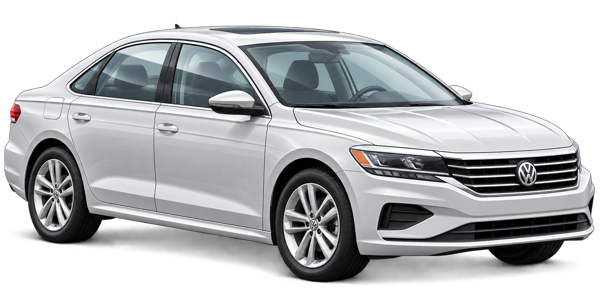
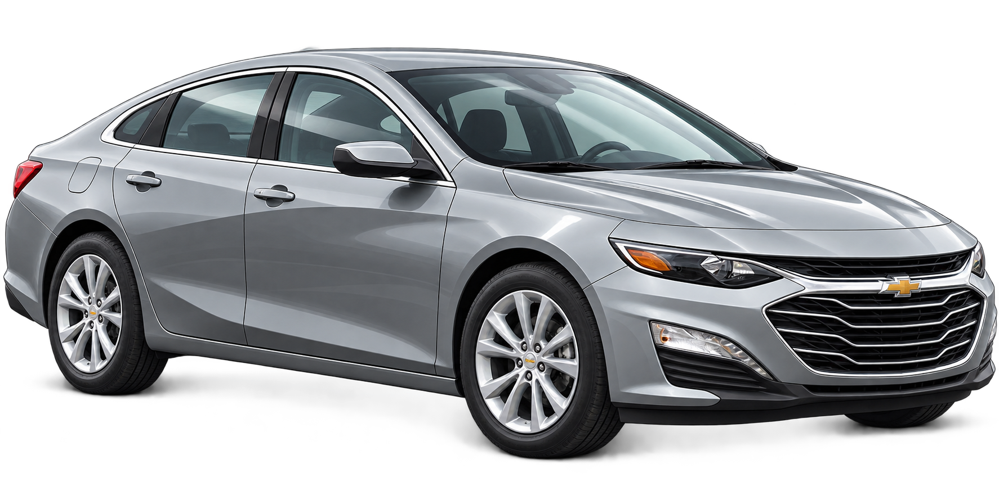
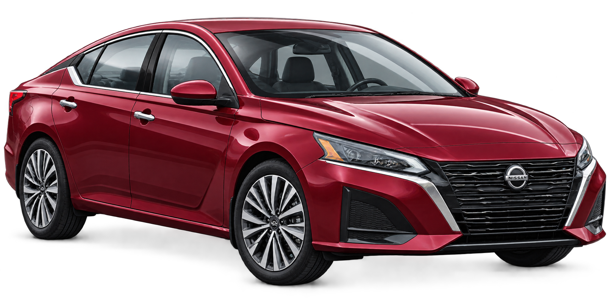
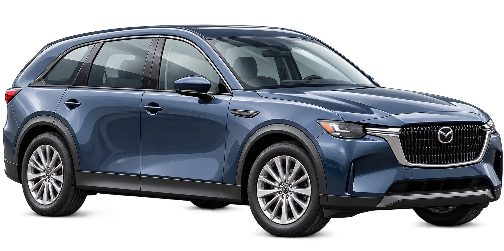
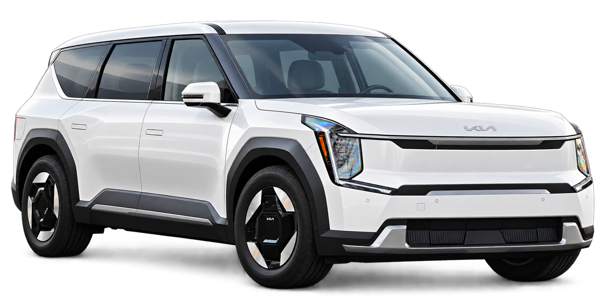
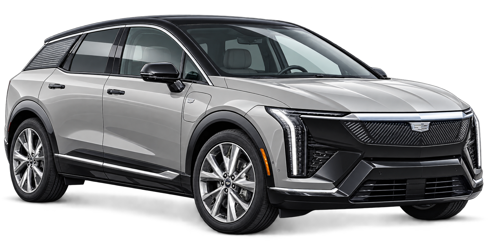
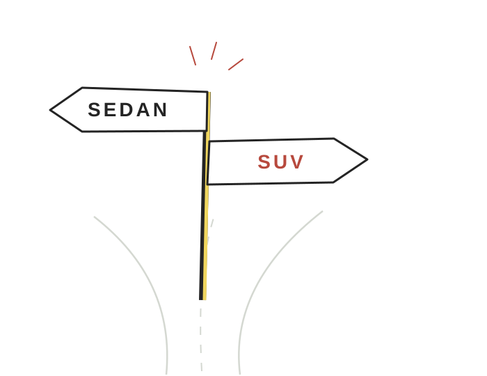

Final model year 2020
Ford Fusion
Production retired. The 2020 model was offered in Canada.
Dealer stock and used vehicles may remain.
Source 1 (opens in a new tab) / Canadian context (opens in a new tab)
CANADA · 2017–2025 · A 5-MINUTE STORY
Consumer choice, automaker strategy, and the changing shape of Canada’s new-car market.
Pierre is 25, lives in the Greater Toronto Area, and is starting with a familiar idea: a practical sedan for everyday life. A car that fits his needs, his parking space, and his budget.
Follow the questionAs he looks through new-car lineups, SUVs and crossovers keep drawing his attention. Some familiar sedan names are missing. Before choosing a car, he wants to understand the choices in front of him.
02 / THE MARKET SHIFT
Pierre is thinking about a sedan. Statistics Canada measures a broader category: passenger cars. Its multi-purpose vehicles include SUVs and crossovers. These labels describe groups of vehicles; they do not tell us why someone chose one.
Pickups, vans and other vehicles are separate categories. Statistics Canada taxonomy ↗ (opens in a new tab)
REGISTERED FLEET
Canada · light-duty vehicles · millions
Statistics Canada ↗ (opens in a new tab) · Annual observations, 2017–2025. Includes older vehicles; not new registrations.
Ontario registration revisions and renewal changes affect the 2022–2025 counts. Read the registration caveat ↗ (opens in a new tab)
See the full data table ↓2017
Start with Canada’s registered light-duty fleet: vehicles with active registrations, including older vehicles. In 2017, it contained about 10.2 million passenger cars and 6.8 million multi-purpose vehicles.
2022
In this series, multi-purpose vehicles overtook passenger cars in 2022. But this doesn't mean people suddenly switched to SUVs. These numbers include older vehicles, and Ontario's registration changes also affected the counts.
2025
By 2025, Canada had about 8.4 million registered passenger cars and 11.1 million registered multi-purpose vehicles.
NEW REGISTRATIONS
New registrations offer a separate view: the vehicles newly registered in each year. Here, the tilt toward SUVs and crossovers is even more visible.
Multi-purpose vehicles’ share of all new motor vehicle registrations · Canada
+21.2 percentage pointsTwo published endpoints. Other vehicle types make up the remainder.
Statistics Canada: Vehicle registrations, 2025 ↗ (opens in a new tab) · September 22, 2026 release. These percentages describe new registrations, separately from the registered-fleet counts above.
The shift is visible.
The reasons need another kind of evidence.
03 / DEMAND & SUPPLY
01 / WHAT PEOPLE SEARCH
In 2024, 49% of vehicle searches on AutoTrader were for cars, compared with 40% for SUVs. Cars here means AutoTrader's vehicle category, not just sedans.
But searching doesn't mean buying. These numbers show what people looked at on AutoTrader, not what they actually purchased.
AUTOTRADER SEARCHES
Canada · January 1–October 21, 2024
02 / WHAT MANUFACTURERS OFFER
A new-car shopper can only consider what is offered. During the same broad period, familiar sedans left Canadian lineups while new SUV models arrived.
Model years can differ from calendar years.
Final model year 2020
Production retired. The 2020 model was offered in Canada.
Dealer stock and used vehicles may remain.
Source 1 (opens in a new tab) / Canadian context (opens in a new tab)
Final Canadian model year 2022

Fleet-only in 2022; Canadian retail availability ended earlier.
This is not a worldwide Passat retirement.
Source 1 (opens in a new tab) / Canadian context (opens in a new tab)
Final model year 2025

Fleet-only in Canada; the final Canadian retail model year was 2024.
Production end was announced for November 2024.
Source 1 (opens in a new tab) / Canadian context (opens in a new tab)
Final Canadian model year 2025

The Altima did not return to Canada’s lineup for 2026.
Canadian withdrawal is not worldwide production end.
Source 1 (opens in a new tab) / Canadian context (opens in a new tab)
New model year 2024

Canadian retail launch: May 2023.
The outgoing CX-9 means this is not evidence of a net gain in nameplates.
Source 1 (opens in a new tab) / Canadian context (opens in a new tab)
New model year 2024 · electric SUV

New three-row EV; Canadian sales confirmed by May 2024.
Production model revealed March 2023; exact first Canadian delivery date unverified.
Production reveal (opens in a new tab) / Canadian sales (opens in a new tab)
New model year 2025
Canadian arrivals began the week of March 18, 2025.
An arrival week, not an exact first-delivery date.
Source 1 (opens in a new tab) / Canadian context (opens in a new tab)
New model year 2025 · electric SUV

Revealed May 29, 2024; Canadian sales confirmed in the first half of 2025.
An exact Canadian first-delivery date has not been established.
Source 1 (opens in a new tab) / Canadian context (opens in a new tab)
Reference-based editorial illustrations, not photographs or scale drawings. Image references & credits. Dealer stocks and used vehicles may remain. Sources and Canadian qualifications accompany every model.
Manufacturers interpret demand; the available lineup shapes what a shopper can consider. These sources show activity on both sides. They do not establish how much either side caused the national shift.
04 / BACK TO PIERRE
At the fork marked SEDAN and SUV, Pierre still has a personal decision to make. The sign now carries a bigger question: how did these become the choices around him?
His preference has not disappeared simply because the market has changed. Nor does a retired model vanish from the used-car market or from the road.
Price still matters, but a fair comparison needs a similar budget and purpose. Space, fuel use, and everyday needs belong in the conversation. None of the national figures can make that individual decision for him.

05 / CHANGED, BUT NOT GONE
The sedans in Pierre’s question sit inside a broader passenger-car category whose place in Canada’s registered fleet has shrunk. Some familiar nameplates have left new-car lineups. Meanwhile, SUVs and crossovers have gained ground, and platform searches show that interest in cars remains.
The data doesn't tell us whether buyers or automakers had the bigger influence. Both consumer demand and the choices offered by manufacturers are part of the story.
Pierre came looking for a car. He leaves with a better question about the market that surrounds it.
We choose a car.
We also choose from
a changing menu.